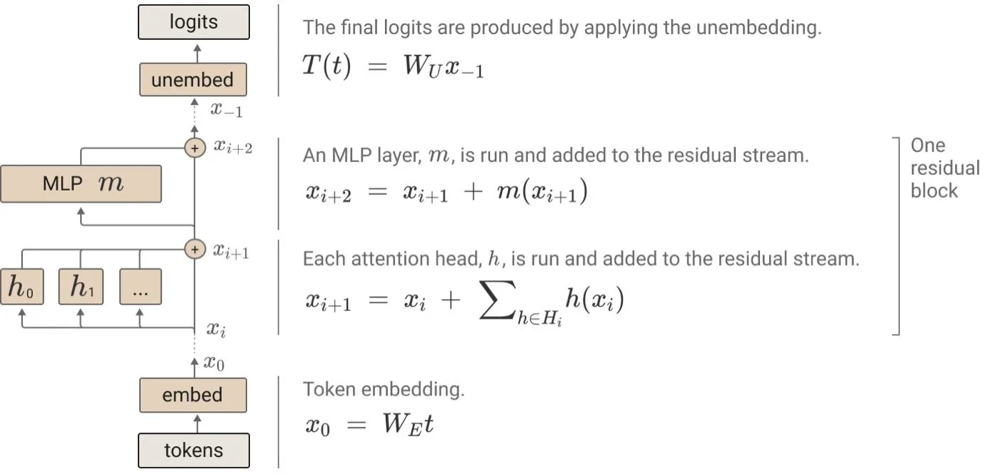
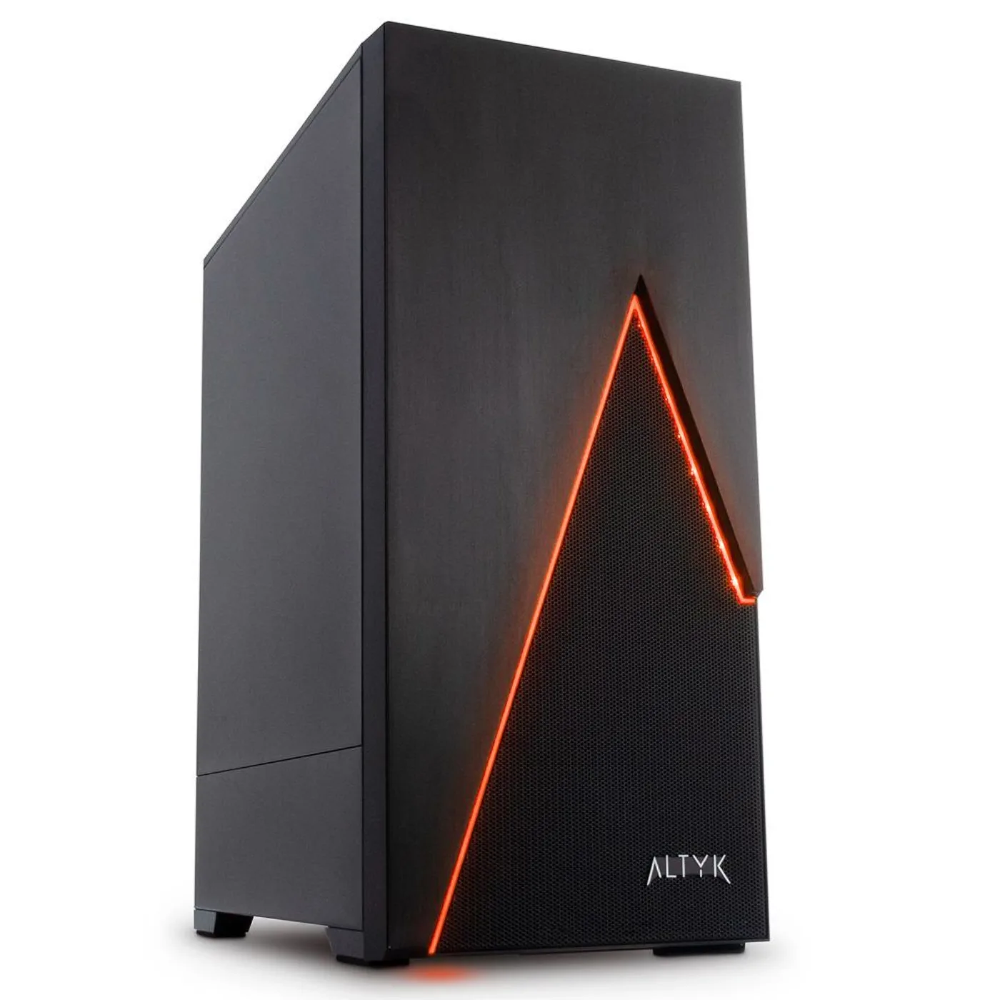

Les duels de l'IApar compar:IA
Le poids physique de l'IA
Des machines, un bâtiment, de l'électricité, de l'eau, des métaux.
Un impact invisible
Rien à l'écran ne dit ce qu'une réponse a coûté.
Pas de compteur, pas de facture, pas de bruit de moteur. L'électricité est dépensée à des milliers de kilomètres, dans un bâtiment que personne ne visite.
C'est ce que cet atelier rend visible.
À chaque question, des calculs
Générer du texte, pour un ordinateur, c'est enchaîner des multiplications de tableaux de chiffres, des milliers de fois par réponse.
N'essayez pas de les faire de tête.

Schéma tiré de « A Mathematical Framework for Transformer Circuits », Anthropic, 2021.
Gros modèle, grosse machine
Ce qui compte, c'est la mémoire qu'il faut pour charger les paramètres.
- Un smartphone : jusqu'à 3 Go.
- Un ordinateur portable : jusqu'à 16 Go, pour un petit modèle.
Seuils affichés par compar:IA dans la fiche « Matériel nécessaire » de chaque modèle.
Au-delà, des cartes graphiques
Une tour

Une carte graphique, jusqu'à 80 Go, pour un modèle moyen.
Un serveur

Plusieurs cartes, au-delà de 80 Go, pour un grand modèle.
Seuils affichés par compar:IA, fiche « Matériel nécessaire », à 80 Go par carte graphique.
Ce que consomme un centre
Un centre orienté IA consomme autant d'électricité que :
100 000 ménages
Les plus grands, en construction aujourd'hui, en consommeront 20 fois plus, soit deux millions de ménages.
Agence internationale de l'énergie, « Energy and AI », avril 2025. Le rapport parle d'un centre « type », pas d'un centre quelconque.
Rallumer une centrale nucléaire
En septembre 2024, Microsoft a signé un contrat d'achat d'électricité sur 20 ans avec Constellation Energy, propriétaire de la centrale de Three Mile Island.
835 MW
promis à des centres de données.
Microsoft n'a pas acheté la centrale, et le réacteur n'a pas redémarré : il attend une décision de licence prévue en 2027.

Constellation Energy, communiqué du 20 septembre 2024. Département américain de l'Énergie, « Crane Restart ».
Et des matières premières
L'essor de l'IA fera passer la part des centres de données dans la demande annuelle de cuivre :
| Aujourd'hui |
D'ici 2050 |
| moins de 1 % |
6 à 7 % |

Pourcentages donnés au Financial Times par la directrice financière de BHP, septembre 2024.
Le cuivre manque ailleurs
En tonnes : de 0,5 à 3 millions par an, la production cumulée des quatre plus grandes mines du monde.
Or la transition énergétique a besoin du même métal, au même moment.
BHP est le premier minier mondial, et il vend du cuivre.
BHP Insights, « Why AI tools and data centres are driving copper demand », janvier 2025.
Prélever n'est pas consommer
Prélèvement
L'eau prise à la rivière ou au réseau. Une bonne part y retourne.
Consommation
La part qui ne revient pas, évaporée dans les tours de refroidissement.
Les deux mots sont souvent confondus. Les chiffres les plus spectaculaires portent le plus souvent sur des prélèvements.
L'ordre de grandeur, en France
6,5 millions de m³
Eau prélevée ou consommée en 2024 par l'ensemble des centres de données français, tous usages confondus, pas seulement l'IA.
Soit la consommation annuelle moyenne d'un peu plus de 100 000 personnes, sur 68 millions d'habitants.
Arcep, enquête « Pour un numérique soutenable », données 2024. Le volume progresse d'environ 8 % en un an.
Le sujet est local
À l'échelle d'un pays, le chiffre est petit. À l'échelle d'une commune déjà en tension sur l'eau, un seul centre peut créer un conflit d'usage réel.
C'est la moyenne nationale qui trompe, et elle trompe dans les deux sens.
Arcep et PEReN, mai 2026, qui citent les oppositions aux Pays-Bas et l'effet du changement climatique sur le cycle de l'eau.
Moins d'électricité, plus d'eau
Les deux ressources tirent souvent en sens inverse.
Refroidir par air
Peu d'eau, beaucoup d'électricité pour la ventilation.
Refroidir par liquide
Jusqu'à 50 % d'électricité de refroidissement en moins, mais souvent plus d'eau.
Patel et coll., 2025, cités par l'Arcep, mai 2026. Un centre qui ne refroidit pas à l'eau a un indicateur WUE nul.
La bouteille d'eau par message
Vous entendrez ce chiffre dans la salle.
Google mesure 0,26 mL par requête médiane, Mistral AI 45 mL en comptant l'eau dépensée en amont. Selon le périmètre, la demi-bouteille demande deux mille messages, ou une dizaine.
Le chiffre ne dit rien sans son périmètre.
Le même kWh, pas le même carbone
C'est l'électricité du pays d'hébergement qui compte, pas celle des utilisateurs.
France
41 g
de CO₂ par kWh produit, en 2024.
États-Unis
384 g
de CO₂ par kWh produit, en 2024. Neuf fois plus.
Ember, Global Electricity Review, 2025, même méthode pour les deux pays. RTE publie 20 g pour la France en comptant les seules émissions directes de production ; l'écart avec Ember vient du bois-énergie.
Des serveurs surtout américains
Les principaux éditeurs de modèles sont des entreprises américaines. Leurs centres de données se concentrent donc sur le territoire américain.
À modèle égal et à réponse égale, le carbone dépend de la prise de courant.

La France a un atout
Son mix électrique est largement décarboné, porté par le nucléaire.
Un serveur qui tourne en France émet donc peu, à calcul égal.
Mais la place sur le réseau n'est pas illimitée : les raccordements de centres de données entrent en concurrence avec l'électrification des transports et de l'industrie.
RTE a mis en consultation la refonte des règles de raccordement, citée par l'Arcep, mai 2026.
Ce que l'écran ne mesure pas
compar:IA calcule sur le mix électrique mondial moyen, jamais sur celui du pays d'hébergement. Le bilan affiche donc une énergie, pas des émissions.
Il faudrait savoir où chaque fournisseur fait tourner ses serveurs. Presque aucun ne le publie site par site. Le débat reste donc entier.
Ce qu'il faut retenir
- Une réponse mobilise une machine réelle, dans un bâtiment réel, branché à un réseau réel.
- L'eau et l'électricité tirent en sens inverse : refroidir autrement, c'est déplacer le problème.
- À l'échelle d'un pays, les volumes sont modestes. À l'échelle d'une commune, ils peuvent ne pas l'être.
- Le bilan de compar:IA suppose le mix mondial moyen, pas celui du pays d'hébergement.